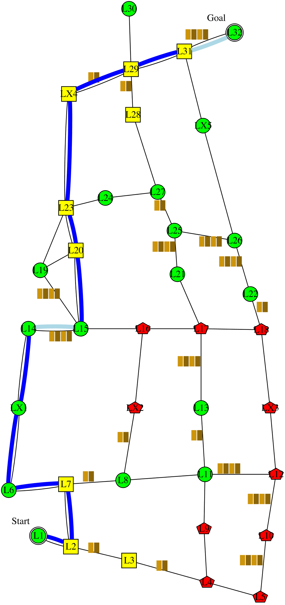
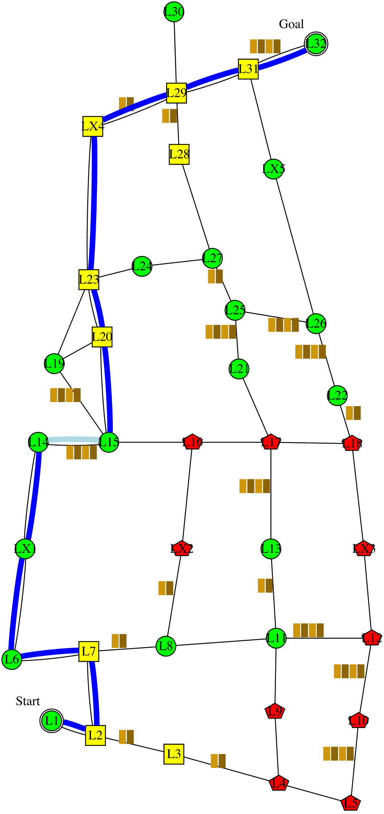

I'm planning to follow this policy . It is expected to have 1.4 collisions; take 153 minutes; and have intrusiveness-penalty of 5: be non-intrusive 12 steps, somewhat-intrusive 2 steps, and very-intrusive 1 step. It has the lowest expected intrusiveness. Alternatively, following this policy  would reduce the time to 151 minutes, and reduce the collision to 1 collision. However, I didn't choose that policy because it would increase the intrusiveness to 6: non-intrusive 10 steps, very-intrusive 2 steps, and somewhat-intrusive 0 step. The decrease in time, and the decrease in collision are not worth the increase in intrusiveness.